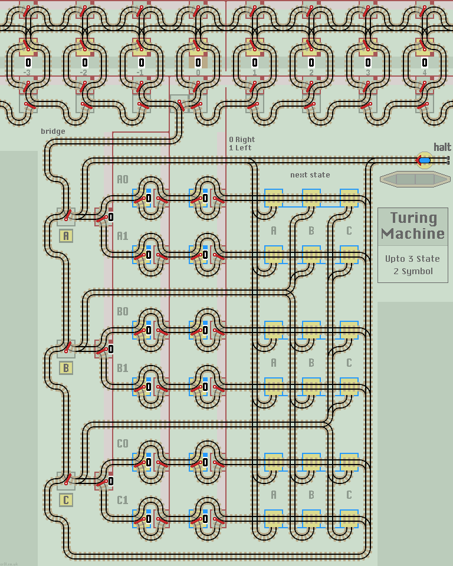
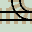

Turing Machine
A Turing Machine is an idealised computer model that in theory can simulate any computation. There is much information on the web including Wikipedia and this useful introduction.
Turing machines use an unlimited tape, divided into cells, with each cell holding a symbol. The machine can read or write a symbol to a cell, and move either left or right to the next adjacent cell.
The machine stores 3 values:
- Symbol - 0 or 1 for a binary machine.
- Move - Left or Right, to the adjacent cell.
- State - A B or C, and halt.
The machine also has a program, as a list of 'transition rules'. For each combination of State and Symbol, the rule gives updated values for Symbol, Move and State.
eg. Rule (A1: 0 R B) means if the machine is in state A and the Symbol is 1, then update Symbol to 0, Move to Right and enter State B.
When the machine is run, it repeats the following Write, Read and Update operations each step:
- Write the Symbol to the current cell.
- Move to the next adjacent cell.
- Read the Symbol from the cell.
- If the State is 'halt' then Halt the machine. Else...
- Update Symbol, Move and State values.
Layout
At the top of the layout is the tape which extends horizontally left and right. Just eight cells are shown, with the central cell labelled '0'. Each cell contains a lazy point which holds the Symbol, shown as a 0 or a 1.
Above them is a row of linked lazy points which select Left or Right, and below is a similar row of linked lazy points which hold the Symbol to be written into or just read out of the cell. At the bottom of the tape is a row of passive points which direct the train back to the current cell.
When the train enters a cell, it writes the Symbol into the cell, then moves Left or Right to read out the Symbol in the adjacent cell.
Below the tape, connected by a single track bridge, is the main layout. On the left are the State points. In the centre, are 6 pairs of manual points which set Symbol and Move direction. On the right, are 6 sets of 3 manual points to select the next State. These are linked horizontally so that only one, (or none) can be selected at a time. This just makes the layout easier to follow.
Operation
The train leaves the station and sets the State Switch to A. It proceeds to the tape where the passive points guide the train to read the value from the current cell.
On returning to the central State Switch the train updates Symbol and Move values before updating the State Switch with the new State.
To program the machine, set the manual points (blue border) to each transition rule and the tape cells to the initial tape data.
Alternatively, load one of the programs from the table below.
Busy Beavers (3 State)
This web page lists some 'winners and other good machines' which I've reproduced in the table below. All can be loaded into the Turing Machine with the relevant 'Load' button. This also clears the tape and resets Symbol to 0 and Move to Right.
| Sigma | 5 | 5 | 5 | 4 | 5 | 6 | 6 | 6 | 5 | 6 | 6 |
| Steps | 21 | 20 | 20 | 17 | 16 | 14 | 13 | 13 | 13 | 12 | 11 |
| L-R | 1-3 | 2-2 | 2-3 | 2-2 | 2-3 | 1-4 | 2-4 | 3-2 | 1-4 | 2-3 | 3-2 |
| A0 A1 B0 B1 C0 C1 |
1 R B 1 R h 1 L B 0 R C 1 L C 1 L A |
1 R B 1 R h 0 L C 0 R C 1 L C 1 L A |
1 R B 1 L A 0 R C 1 R h 1 L C 0 L A |
0 R B 1 R h 0 L C 1 R A 1 R B 1 L C |
0 R B 1 L C 1 L A 1 R B 1 L B 1 R h |
1 R B 1 R h 0 R C 1 R B 1 L C 1 L A |
1 R B 1 R C 1 L C 1 R h 1 R A 0 L B |
1 R B 1 L C 1 L A 1 R B 1 L B 1 R h |
0 R B 1 L C 1 R C 1 R B 1 L A 1 R h |
1 R B 1 R A 1 L C 1 R h 1 R A 1 L B |
1 R B 1 L C 1 R C 1 R h 1 L A 0 L B |
The first and sixth have already been built as fixed Busy Beaver layouts.
| 
|
| Click layout to pause/run train | Click points to switch 0/1 | Click start circle to reset train/points |
| Lazy points switch between upper 0 or lower 1 branch lines Trains arriving on a branch line switch the point to that line |
|
|  | Sprung points allow branch line trains to join the main line All main line trains go straight ahead and never 'branch off' |
Busy Beavers (2 State)This web page also lists some 'winners and other good machines' for 2 State Busy Beavers, which again can be loaded into the Turing Machine with the relevant 'Load' button. More ProgramsInvert - This inverts all data. The machine never halts, although the train soon stops when it runs out of tape. 010 - This halts if a single 1 with a 0 either side is found. The halt rule sets Move to L to save a tape cell. Both programs read the tape from the right of the central cell. You can change the initial data on the tape of course. Also, two passive points are clickable, so the central cell can be repositioned to the left to extend the tape by two cells. |
|
Notes
The Turing machine is locked into a write/read loop. So the first action is to write a 0 into the cell to the left of the central cell. I've researched the web and this is usually OK as the tape should begin with all data to the right of the central cell.
If not, then a second bridge can be added. The central cell is read directly (without a preceeding write), and then the machine continues with its normal write/read loop. This also reduces the requirement to reset points before each new computation.
Turing Train Turing Machine
- Does not have a moving head or tape. All track is firmly nailed to the ground. The train is guided back to the current cell by the tapes passive lazy points. This means steps take longer to complete the further they are from the central cell.
- Does not have a list of transition rules. Instead, each rule is described and implemented by the actual track layout.
In his book 'The Emporer's New Mind' (page 48) Roger Penrose writes:
For my own part, I feel a little uncomfortable about having our finite device moving a potentially infinite tape backwards and forwards. No matter how lightweight its material, an infinite tape might be hard to shift! Instead, I prefer to think of the tape as representing some external environment through which our finite device can 'move'. On this view, the device receives all its input from this environment. It uses the environment as its 'rough paper'. Finally it writes out its output on this same environment.
Further Machines
- The layout can be extended downwards to accommodate more States.
- Each cell can be expanded to hold more symbols. A 3 position lazy point, would provide 3 symbols, producing a Busy Beaver needing 374,676,383 cells. Turing machines get big fast!
- The layout could incorporate a Counter to record the number of steps taken.
- A third set of manual points can be added to send the train to two (or more) tapes. All tapes would be stacked one above the other in parallel. The tape number would be added to each transition rule. Returning trains would be combined as they re-enter the State Switch.
- The top of the tape can be simplified by removing the bypass to each Left/Right lazy point. The Left/Right points would always switch (flip) as the train enters the adjacent cell, but they are set correctly by the next transition rule.